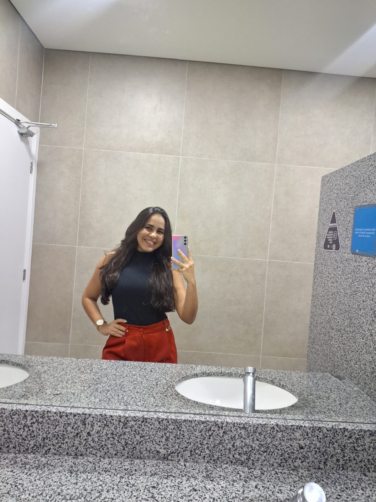

Apresentação

Lívia Guirra, discente de Engenharia da Computação na Univasf.
Informações Institucionais
Abaixo estão os dados institucionais dentro da universidade e da empresa:
- Curso: Engenharia da Computação
- Período ou semestre: 3º semestre
- Universidade: Univasf
- Campus: Juazeiro
- Tipo de vínculo na empresa: Membro
- Tempo de participação na InoveJr: 6 meses
História com a InoveJr
Conheci a empresa através dos meus colegas.
Acreditava que participar da empresa seria uma experiência válida para adquirir conhecimentos e desenvolver novas habilidades.
O primeiro aprendizado: Trabalhar em equipe na reestruturação da empresa.
Setor
Faço parte da diretoria de presidência.
Função
A minha função principal dentro do setor de projetos é desenvolver e entregar código funcional para as demandas designadas.
Essa função exige um alto nível de responsabilidade e comprometimento, pois quase toda a empresa será julgada pelo cliente com base no desempenho e na qualidade do que nós entregamos.
Contribuo ativamente para a empresa melhorando a sua imagem no mercado através de uma boa entrega de resultados e de um código limpo.
Habilidades
Nesta seção, minhas aptidões técnicas e comportamentais:
- Organização
- Comprometimento
- Responsabilidade
- Trabalho em equipe
- Curiosidade constante por aprendizado.
Encerramento
Vejo cada novo desafio técnico na InoveJr como uma oportunidade inestimável de aprendizado contínuo e evolução constante na minha carreira de Engenharia.
Reafirmo aqui o meu compromisso em entregar sempre o meu melhor em cada linha de código, contribuindo ativamente para os resultados da equipe e para o sucesso das soluções que construiremos juntos.